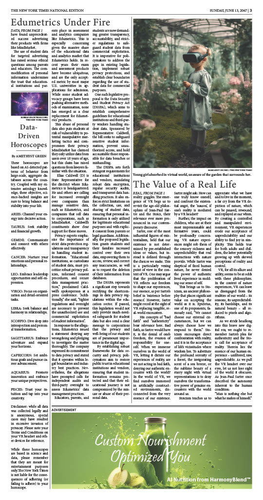
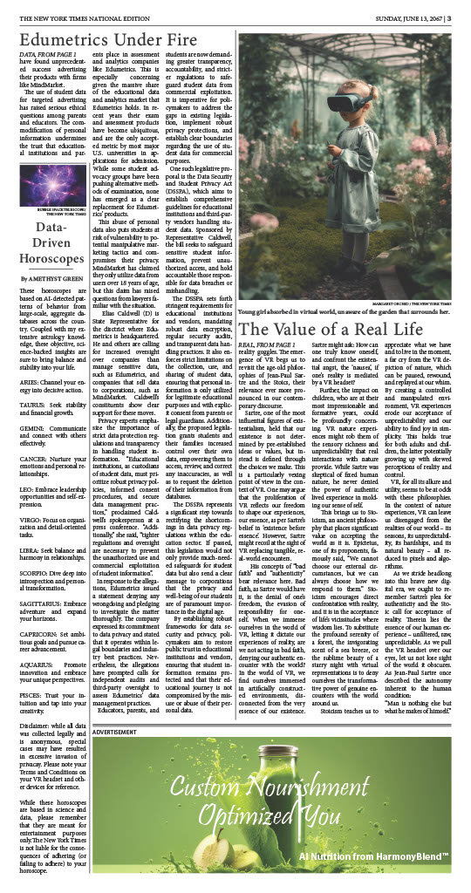
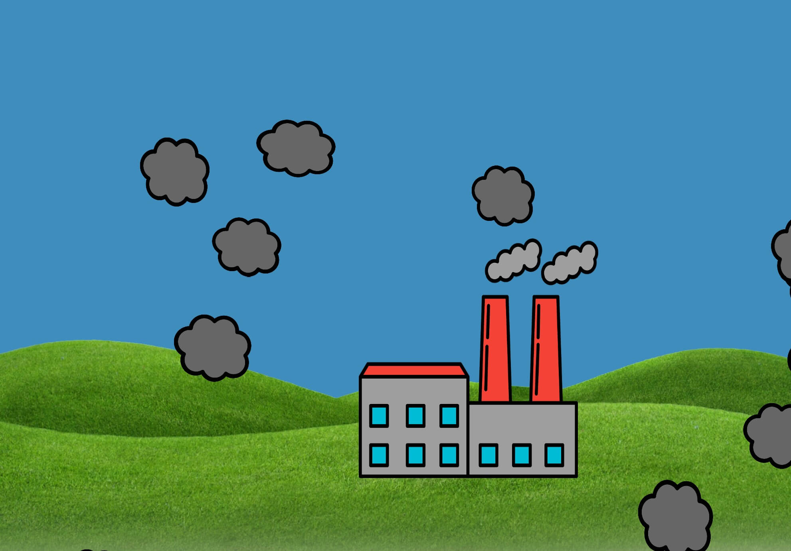

Speculative design is design for a "what-if" world. Through my final project for VIS 133: Topics in Speculative Design, I was able to engage with the social and environmental implications of a society built around virtual reality and develop my skills in prompt engineering and graphic design.
read the full issue in high definition here

 

While our only requirements for this project were to "generate 8 images and a 5 page story" using AI tools, I decided creating a speculative newspaper would be a more holistic way to realize the world I was imagining. All text and images were created in collaboration with ChatGPT and Midjourney, and the formatting was done entirely by hand with InDesign.
For ENG 100D: Design for Development, in partnership with Global TIES: University of California San Diego, my group collaborated with a 4th grade teacher at High Tech Elementary in Chula Vista. We designed an interactive classroom activity to teach students about the life cycle of objects, emphasizing sustainability.

In my role as Creative Director for the team, I proposed giving each student the opportunity to "weave" using recycled fabric and handmade cardboard looms. Building upon this inspiration, we decided to simulate each step in the cycle of objects: Material Extraction, Manufacturing, Shipping, Use, and End-of-Life.

To better meet our objective of addressing several of the United Nations' Sustainable Development Goals through this project, I coded an interactive pollution visualizer with JavaScript to illustrate emissions at each step of the cycle. This increased student engagement while highlighting the environmental cost of the cycle.
experience the pollution visualizer for yourself here
